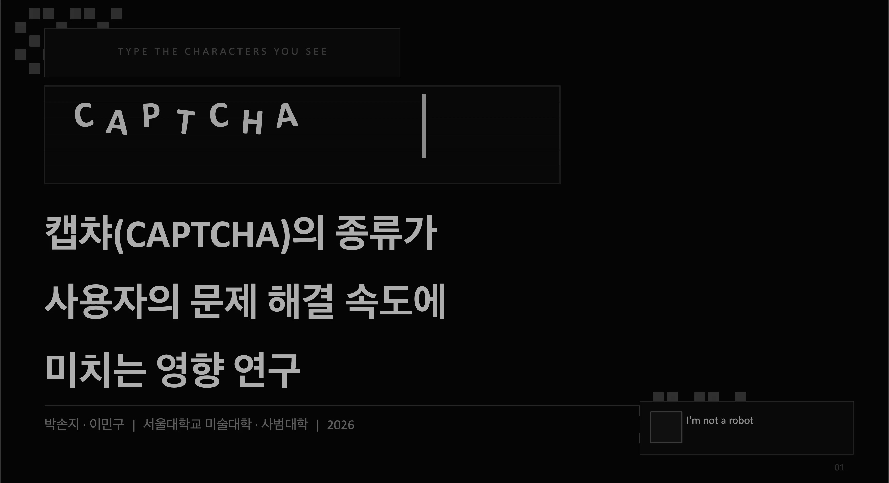
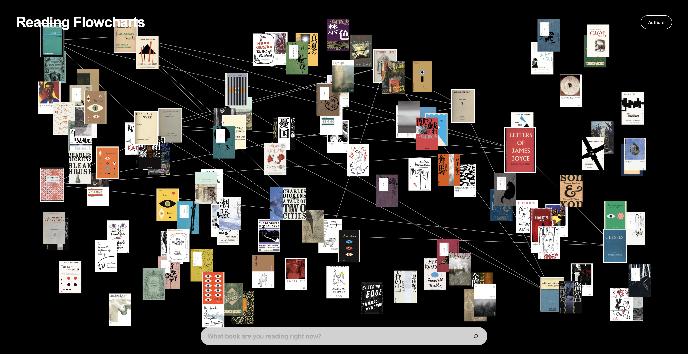
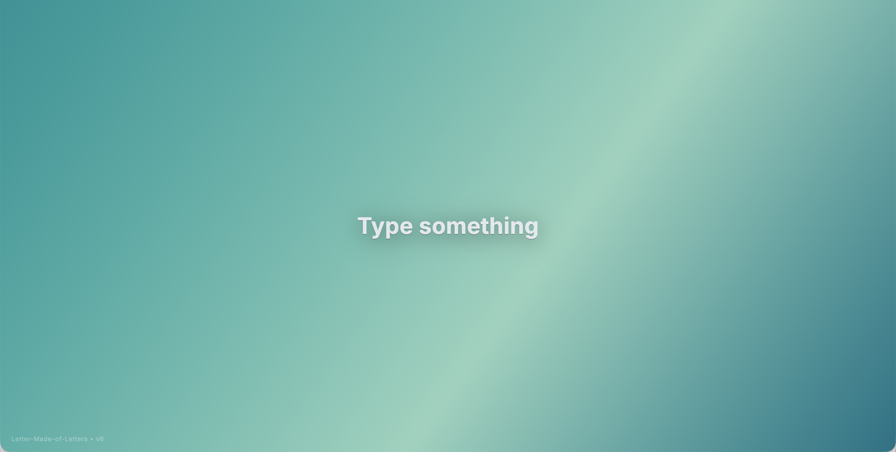

Resume
이력
학력
운현초등학교 졸업
영훈국제중학교 졸업
용인한국외국어대학교부설고등학교 국제계열 재학
고등학교 졸업학력 검정고시 합격
서울대학교 미술대학 디자인과 재학
컨퍼런스 및 학술 활동
Democracy for All Conference 기획 및 운영
Duke University Prof. Edmund Malesky, Prof. Michael Munger, Prof. David Siegel 참여
주제: Imperiled Democracy: How to Navigate American Politics in the Rise of Polarization
청소년 정치 컨퍼런스 기획 및 운영
이일 변호사, 자유기업원 최승노 원장, 한국여성정치네트워크 신지예 대표 참여
UN Youth Environment Conference 참가
기간: 2021.08.09 – 2021.09.05
한국정보기술학회 하계종합학술대회 참가
동아리 및 교내 활동
학생회 문예부 부장
과학 잡지 제작 동아리 Cosmos 활동
정치 토론 동아리 ‘썰전’ 부장
Mock Trial 동아리 Aequitas 활동
봉사 활동
YMCA 벽화 봉사 동아리 ‘꿈꾸담’ 활동
종로구 청소년 연석회의 의장단 활동
미술 재능기부 봉사활동 참여
전래군동화양: 다국어 포스터 — 동화가 되어 책이 없는 나라로 가다!
시각장애인 활동보조 및 동반주자 봉사활동
Portfolio
작업

2026 APR - MAY
CAPTCHA Usability Research
CAPTCHA 유형에 따른 사용자 문제 해결 속도와 인지적 부담의 차이를 분석한 디자인 리서치 프로젝트입니다. 문자 왜곡형, 이미지 선택형, 슬라이더형, 퍼즐형, 체크박스형, 산술/텍스트형 CAPTCHA를 대상으로 실험 웹사이트를 설계 및 구현하고, 사용자가 각 CAPTCHA를 해결하는 과정에서 소요되는 수행시간 데이터를 수집했습니다.
본 연구는 CAPTCHA를 단순한 보안 시스템이 아닌 사용자 경험과 상호작용 구조를 포함하는 인터페이스로 바라보며, 각 유형이 요구하는 시각적 탐색, 패턴 인식, 공간적 조작, 해석 과정의 차이가 실제 사용성에 어떠한 영향을 미치는지 분석하는 데 목적을 두었습니다. 이를 위해 모든 CAPTCHA 유형의 인터페이스 디자인 요소를 최대한 동일한 조건으로 통제하고, 인지 처리 방식만이 달라지도록 실험 환경을 구성했습니다.
실험은 온라인 환경에서 진행되었으며, 참가자는 여섯 가지 CAPTCHA 유형을 무작위 순서로 수행했습니다. 이후 유형별 평균 수행시간을 비교하고, 일원분산분석(ANOVA) 및 사후검정을 통해 CAPTCHA 유형 간 수행시간 차이의 통계적 유의성을 분석했습니다. 본 프로젝트는 디지털 보안 인터페이스의 형태가 사용자 경험과 인지적 효율성에 미치는 영향을 정량적으로 탐구한 연구 사례입니다.

2026 MAY
Flowcharts
Flowcharts는 작가별 작품 읽기 순서를 시각적으로 탐색할 수 있도록 만든 인터랙티브 웹사이트입니다. 문학 작품을 처음 접하는 사용자가 어떤 책부터 읽어야 할지 쉽게 결정할 수 있도록, 작가의 주요 작품들을 난이도, 주제, 분위기, 대표성에 따라 연결하고 플로우차트 형식으로 구성했습니다. 기존의 추천 목록이나 검색 결과처럼 일방적으로 정보를 나열하는 방식이 아니라, 사용자가 자신의 관심사와 읽기 경험에 따라 자연스럽게 다음 작품을 선택할 수 있는 탐색 구조를 제안했습니다.
메인 화면에서는 책 표지 이미지와 작가별 페이지를 통해 시각적인 흥미를 유도하고, 각 작가 페이지에서는 작품 간의 관계와 추천 흐름을 한눈에 파악할 수 있도록 설계했습니다. 이 프로젝트는 문학 정보 아카이브와 인터랙티브 내비게이션을 결합한 웹 디자인 실험으로, 독자가 작품을 ‘검색’하는 것을 넘어 하나의 경로를 따라 ‘탐색’하도록 만드는 데 목적이 있습니다.
View Project →

2025 OCT
Letter-Made-of-Letters
Letter-Made-of-Letters는 사용자가 입력한 단어를 수많은 작은 문자 입자로 재구성하여, 입력된 글자 자체로 하나의 거대한 글자를 형성하는 인터랙티브 타이포그래피 웹사이트입니다. 단순히 텍스트를 표시하는 방식이 아니라, 언어의 의미와 분위기를 시각적인 움직임과 구조로 변환하는 데 초점을 두었습니다.
OpenAI를 활용해 입력된 단어의 감정과 분위기를 분석하고, 이에 맞는 색상, 배경, 움직임, 글자 배열 방식, 입자 효과를 실시간으로 생성하도록 설계했습니다. 또한 특정 단어 입력 시 비, 번개, 불꽃, 파동, 유령 등의 숨겨진 이스터에그 효과가 나타나며, 사용자가 단어를 입력하는 행위를 하나의 시각적 경험으로 확장하는 것을 목표로 했습니다.
View Project →